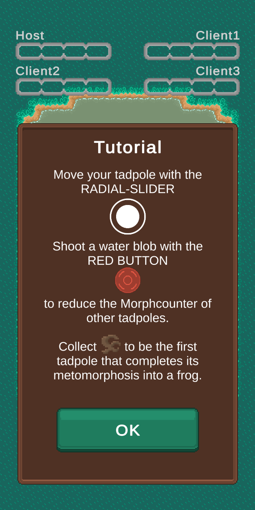
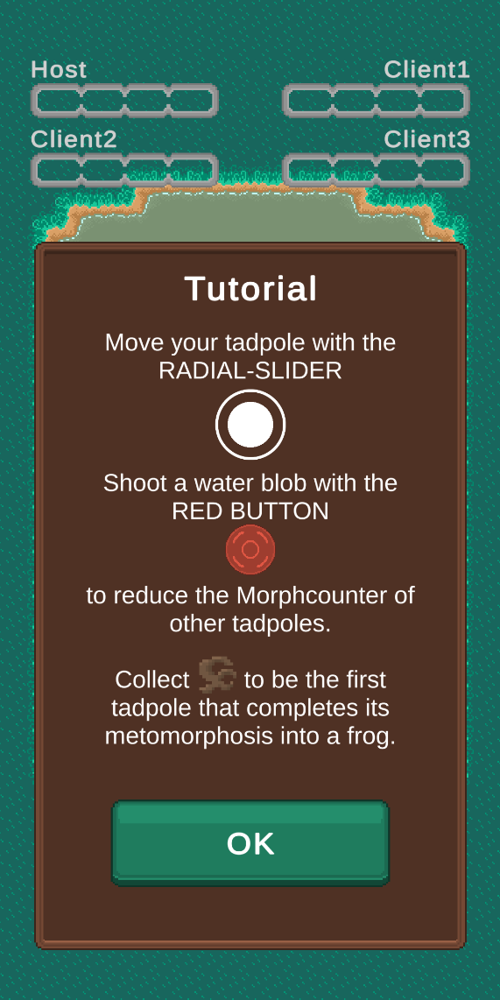
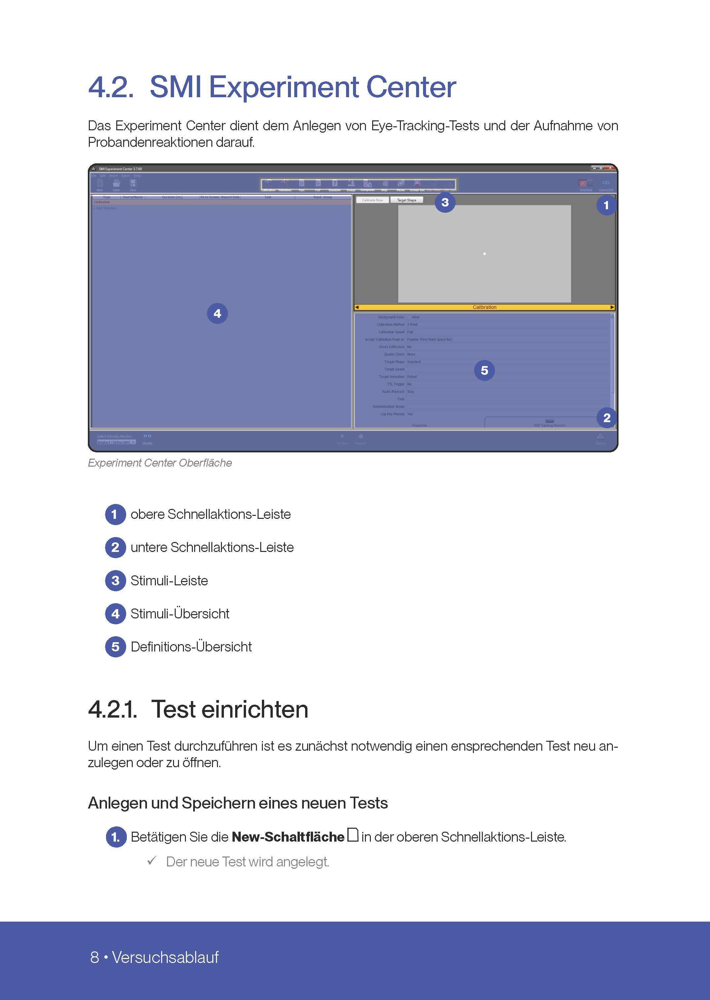
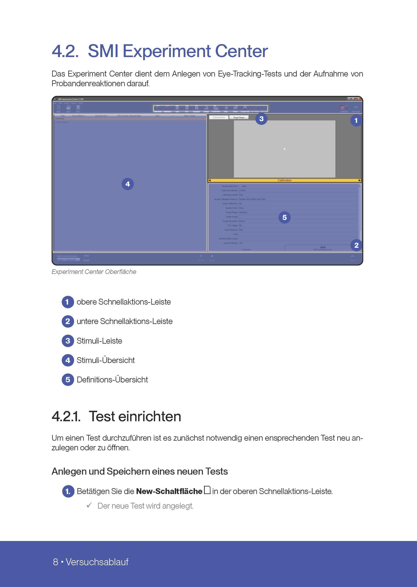

Entwicklung mit Unity
Mit der Unity Game Engine lassen sich herkömmliche Videospiele in 2D oder 3D für jede Plattform entwickeln, sowie interaktive Infografiken, Apps, AR-, XR- und VR- Anwendungen. Unity ist die marktführende Engine und gewinnt stetig mehr Aufmerksamkeit von Unternehmen, die sich darum bemühen jüngere Zielgruppen zu erreichen. Der Fokus liegt dabei auf spielerisch umgesetzte Unternehmensinhalte in Form von Werbespielen oder -apps.
Auch Prozesse und Abläufe können mit Hilfe von Gamifizierung in Unity umgesetzt werden, womit Anwendungen geschaffen werden, mit denen Kunden tiefere Einblicke in die Dienstleistungen eines Unternehmens erhalten. In der Aus- und Fortbildung ist es bereits keine Seltenheit mehr, dass bspw. VR-Anwendungen genutzt werden, um eine gefahrlose Lernumgebung zu schaffen und Ressourcen zu sparen.
Interaktives Infospiel: Vitamancer
Einzelspieler PvE Retro-like Infospiel im Pixelart-Stil mit Highscore, Survival-Modus und Ausrüstung.
Bei diesem Projekt lag der Fokus darauf, Wissensinhalte in eine interaktive Anwendung einzubringen. Entwickelt wurde dementsprechend ein Spiel, bei dem sich der Spieler mit Hilfe von Vitaminen gegen Viren und Keime behaupten muss.
Mit voranschreitendem Spielfortschritt werden neue Level und weitere Vitamine, sowie Wissenswertes zu diesen freigeschaltet. Ziel des Spiels ist es die beste Kombination an Vitaminen auszurüsten und so alle Level zu meistern.
Verwendete Programme:
Unity Game Engine
MS Visual Studio
Aseprite
Mehrspieler Android App: Kaulquappe
Mehrspieler Android App im Pixelart-Stil mit Lobby und PvP.
Das Projekt Kaulquappe entstand in meinem 5. Studiensemester im Modul Mobile Computing.
Die Anwendung wurde also für das Android Betriebssystem entwickelt. Der Spieler steuert eine Kaulquappe und sammelt Nahrung ein, um die Metamorphose zu einem vollentwickelten Frosch zu durchlaufen.
Mit diesem Projekt habe ich erstmals die Unity Cloud Services genutzt, wodurch generelle Mehrspieler Features unterstützt werden. So können sich bis zu vier Spieler mit der gleichen App in einer Lobby versammeln und dann gegeneinander im Spiel antreten. Wer als erstes zu einem Frosch wird gewinnt.
Verwendete Programme:
Unity Game Engine
MS Visual Studio
Aseprite
 


VR Lernanwendung: Virtual Welding Master
Lernanwendung die das aluminothermische Verschweißen von Schienen in einer virtuellen Umgebung ermöglicht.
Die VR-Anwendung Virtual Welding Master wurde in meinem vierten Studiensemester im Modul Gamedesign von mir und drei meiner Komilitonen konzipiert und im fünften Semester im Modul Gamification und Virtual Reality umgesetzt. Meine Aufgabe bestand in der Erarbeitung der nötigen Spiellogik und deren Umsetzung als C# Programmcode.
Die Anwendung schafft eine virtuelle Umgebung in der der Spieler den Prozess des aluminothermischen Schienenverschweißens mit allen dafür nötigen Werkzeugen und Materialen selbst durchlaufen kann. Der Arbeitsablaufs wurde größtenteils realitätsnah umgesetzt und mit spieltypischen Elementen ergänzt. Virtual Welding Master entstand durch die Kooperation meines Studiengangs und der Elektro Thermit GmbH & Ko. KG, wo sie für Messe- und Ausbildungszwecke genutzt werden soll.
Verwendete Programme:
Unity Game Engine
MS Visual Studio
3ds Max


 
